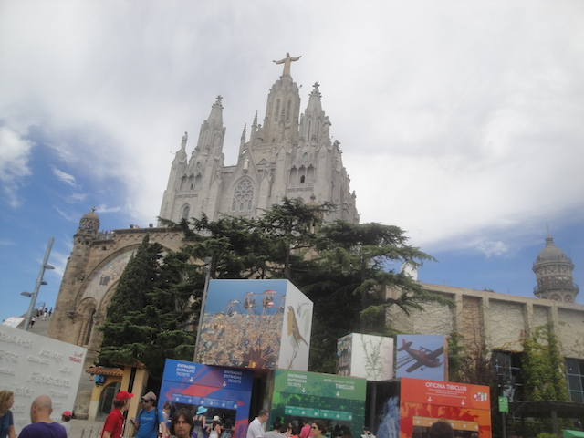
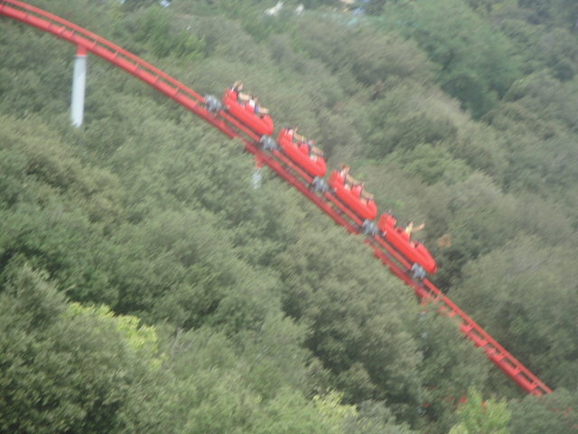
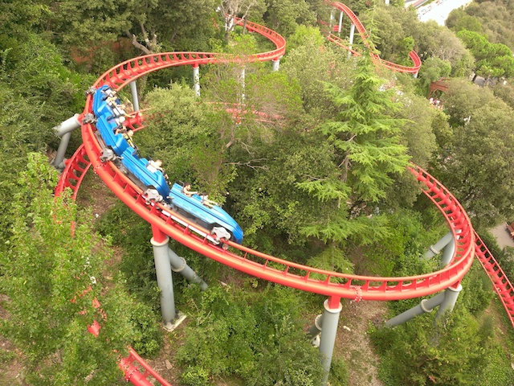
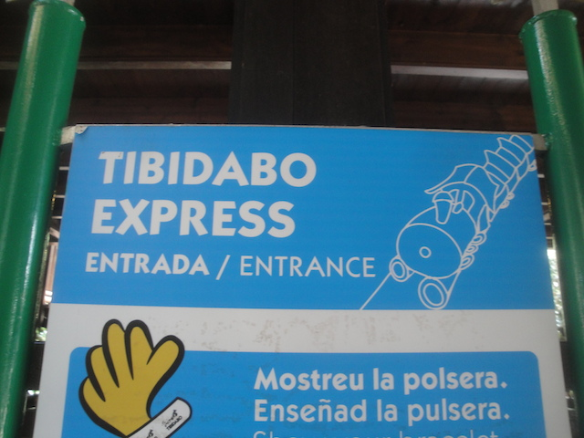
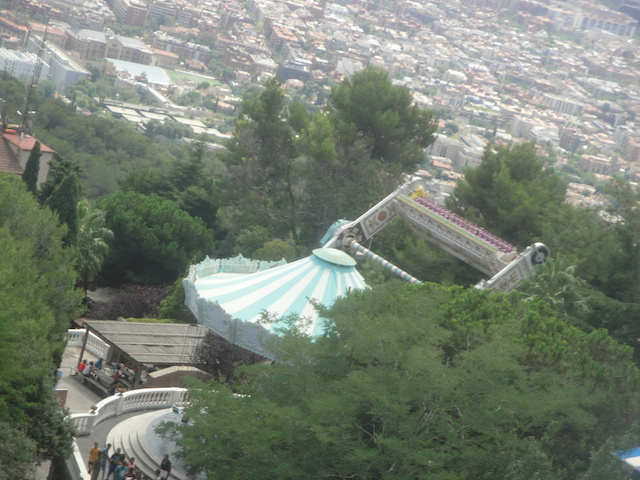

All right. Time for another Incrediblecoasters Trip. Now, this is a very different trip for Incrediblecoasters as this isn't really a roller coaster trip at all, but rather, this is a cruise. Granted, I do go to a theme park, but that is not the point of this trip at all. This is more of a trip that sort of came out of nowhere and is our big trip of the year. And though it may seem weird that I'm posting a non-coaster update on a coaster site, keep in mind that I've done plenty of non-coaster updates, both on cliff jumping, as well as on non-coaster trips. So it's not that crazy. Plus, this trip was freaking awesome, even if it was completely different than what we normally do. And I got to go back to Europe for the 3rd time this decade, which I'm always happy about.
I know I complained about United Airlines last time. Well, this time, I flew on Delta, which I must say, is a BIG improvement. First off, they have the best saftey video ever, featuring a furry, Moses, a sea captain, a cowboy, a woman who's Etch-A-Sketch got ruined, Yo Gabba Gabba!, a 1% doucebag, an owl, a puppeteer complete with puppet, an aging guy, a guy with Google Glass, a guy who has to destroy his elaborate robotic world, and 5 star reviews for the Saftey Guide. But also, though I'm sure other airlines have this, but those USB outlets saved my ass, allowing me to use my Ipod and catch up on podcasts I'm behind on. I highly like this feature.
Perhaps drinking alcohol on a plane isn't a smart idea, but f*ck it. =)
Barcelona from the plane.
All right. We're here. Let's put our stuff away and hit the town!
Ooh. Pretty church.
So happy to be back in Europe.
All right. First thing we do while in Europe, is of course, hit the theme park. So we're off to Tibidabo. One of the hardest parks to get to that I've been to.
First you take this trolly after getting off at the right bus stop.
Then you get off and have to take a funicular to the top of the mountain.
Seriously, getting to this park is an adventure all in itself. =)
Yay!! We made it!!
Love the view from this park.
Tibidabo is a very interesting, strange, and quirky little park. There's really not much like it. The closest I can come to describing this park is that it's sort of like the Glenwood Caverns Adventure Park of Europe.

Yes, there's a famous church here, but trust me. That's not why we're here. =)
Here's our real reason for being here.
Muntanya Russa is a coaster that's essentially built into the side of the mountain and is currently the only coaster at Tibidabo.

Muntanya Russa through the trees.

If I had to describe this ride in one word, it'd be pretty. There's not anything to really scream about when it comes to the actual roller coaster, it's actually kind of forceless. But it is a very pretty ride, both in it's setting and its design.
See that hill right there? No airtime on it whatsoever.
But hey. The views you get from the ride are just phenomenal. So I like it. =)
Check out our raw footage of this fun little ride, including a full length POV.

For those super whores sad enough to count powered coasters (THEY DON'T COUNT!!!), they have one here for you. And I even rode it.
I guess I let my imagination get carried away when I thought about the ride (I never really spent time thinking about this ride) because it was much weaker than I was expecting.
While Tibidabo has a lot of interesting rides, perhaps its most interesting ride is the Plane on a Stick. Or whatever the hell its real name is.
Plane on a Stick is basically this plane that flies in a circle and goes over the edge of the mountain and people freak out about the edge and question the safety of the plane. It's kind of like the rides on the top of the Stratosphere Tower, except looking down on Barcelona > looking down on Las Vegas X1000.
You know what sounds good after being on multiple planes for 14 hours flying from Los Angeles to Barcelona? Getting inside another f*cking plane!! =)

I see you Top Spin I didn't ride.
Ah, there's that view I keep hearing everyone rave about.
The other ride that people gush about thanks to it being home made and people freaking out because of the view and trusting how its built is the Panoramic, which while it looks like a Skyscraper (THAT WOULD BE F*CKING AWESOME!!!), but sort of acts like a Ferris Wheel.
I actually had to skip the ride thanks to being short on time. It's a little bit of a bummer, but it's not too big of a deal as I'm assuming that like Plane on a Stick, it's not actually scary and mainly just exists for its beautiful and magnificent view of Barcelona. Oh well.
If I see a random funhouse mirror, I have to stop and take a picture in it.
Hey Six Flags Magic Mountain fanboys. Does this look familiar to you? =)
There's just this atmosphere to this city that I really like.
Hanging out in Placa Catalunya, the center and main square of Barcelona.
Oops. Looks like someone got drunk and forgot to place the stairs rightside up. Not a problem. We'll just call it modern art.
Love the beach right by our hotel.
Holy Crap! I'm in Europe! That means I get to start drinking European Fanta again!!! God, I love that sh*t!!! =)
Apparently, this is some extravagent mall. After going to the Mall of America, I am not impressed.
Well, that's enough Barcelona for now. Time to board the ship, as we'll be sailing on the Disney Magic for our journey. =)
Here's where we'll be staying for the next 7 days.
For those of you who wish to play Candle on the Water.
If you're at sea for the day, then you better hope you enjoy eating at Cabanas.
You really don't have to worry. The food is pretty good, and that's just the lunch stuff. It's much better in the actual resteraunt dining rotation. =)
And hey. Unlimited dessert is always a good thing.
"Hey everyone!! If for any reason, this ship goes down like the Titanic, please do the following so we can get James Cameron to turn this into a big blockbuster hit."
Oh boy!! The ship is leaving!! Let's party!!! =)
All right. For our first night, we're at Cariocas, the ship's South American resteraunt.
Three Caballeros is awesome. Definetly one of Disney's underrated films from their World War II non-continous story era, and I wish that Disney did more with Jose and Panchito. Admit it. These three would make a great cartoon for the Disney channel. You know they would.
Hey. Keep the desserts coming and I'm happy.
Ooh. I like the towel lobster.
For those who want a challenge while on the ship, there's Anna's Chocolate Chase where you look for clues on the ship to fill it out and win prizes. I partook for a couple minutes before moving on. And hey, I kept the chocolate.
Good morning Captain Mickey statue. How's it going?
Just in case you were foolish enough to think that I ate healthy for breakfast.
If you want a nice interesting adult activity, try the Anyone Can Cook classes. They're a lot of fun.
Today, they taught us to cook Lobster Ravioli accompinied with a South African Wine.
Considering the fact that I mostly cook processed garbage for myself, this was something that I should probably be learning, regardless of whether I'm on a cruise or not.
Now, I don't really like seafood and I remember not liking lobster, but it'd been 11 years since I last tried it, so I gave it another shot. Sorry, but yeah. I'm not really into lobster. But at least the wine was good.
I know many people who would love to be in here.
Learning how to draw Mickey Mouse. Hey, I love these animation classes at the Disney parks, and I love them here. I just wish that the cartoons and art I draw were more professional looking and less...crappy.
I love these paintings. I know I generally say that people waste way too much money on paintings, art, and general stuff like that. But if I were rich and didn't have to constantly sweat bullets about my financial situation like I currently do, I'd probably get one of these.
For those of you trying to stay in shape (You think you can be healthy on a cruise? LOL. How cute and naieve), they have a running track. Probably should've used this since I am a runner who generally runs on average, 29 miles a week. But f*ck it.
What's that? You just ran 1/3 of a mile? Congratulations. Have some free ice cream.
They were playing Disney Bingo where they showed from classic Disney movies (as well as some of their horrible sh*tty forgotton ones. The Pacifier, Beverly Hills Chihuahau? We both know that those movies suck. Don't you try and tell me these are on the same level as Disney classics like Mary Poppins and the Lion King).
If you're still worried about Cabanas food, don't be. See, they even have Lamb Curry (and it's really good).
And the Peach Cobbler and Tiramisu, yeah. Both really freaking good.
Hello random island that I'm assuming is property of Spain.
What cruise line am I sailing on again?
Normally, cruise ship water slides are nothing to pay attention to. The Aqua Dunk is an exception to that.
Because be honest. How many trap door water slides do you know of on cruise ships? =)
Hey, this is the 3rd (technically 4th) trap door water slide I've done. So I'm curious to see how it is.
Aww. I wish that the original design came to fruition.
Honestly, the ride itself is pretty crappy. You know the orange trapdoor slide at Six Flags Hurricane Harbor? The one with the uncomfortable turn that really scratches your back and sprays water down your throat? This is basically the Jr. version of that. But I just like the setting and the idea of this being on a cruise ship so much that I'm pretty forgiving of the flaws, cause yeah. As a whole, the slide is technically bad, even though I had fun.
All right. Tonight's dinner is at Lumieres. The french themed resteraunt on the ship.
I hope you like food pictures, cause yeah. I'm that guy, and I don't even post them on Instagram. =)
Hey, the steak was really good.
Not sure what dessert to order? Get a sweet temptation and try them all.
Aww, the towel animal is so cute, I just want to eat its little chocolate eyes.
They had a big Freezing the Night Away party up on deck that night. And hey, what the hell. Why not go.
"You guys excited to hear Let It Go again!? No? Too f*cking bad!!!" =)
Hey, it was a fun little deck party and I had fun.